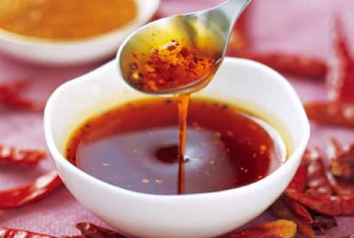
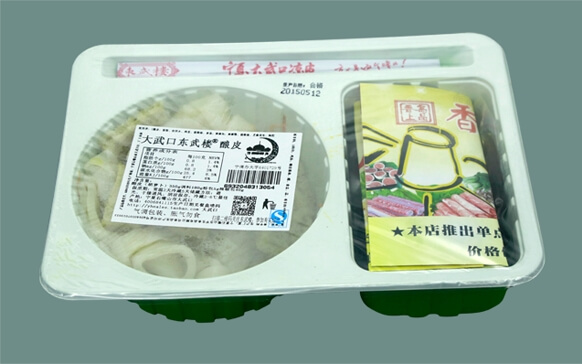

银北的小麦地处黄金北纬38度地带，常年日照充足有着全球独一无二的气候优势，背靠贺兰山，千百年来武当泉水孕育着这片肥沃的土地，黄河水滋润着她。世代传统的小麦研磨工艺，加上用武当泉水和面洗面，让大武口凉皮有着独特的风味和口感。
头茬羊角辣椒经受黄河之水的滋润，享受着超长的光照条件，经过贺兰山坡地的晾晒加之传统石磨磨制成辣椒粉，佐以当地优质的葵花油和胡麻油制成辣椒油，再配上枸杞，香辣无比、滋补肝肾、益精明目。
采用专业食品级包装材料真空封装。
顺丰快递，力保48小时内美味送到您手中。
夏季5天，冬季10天。